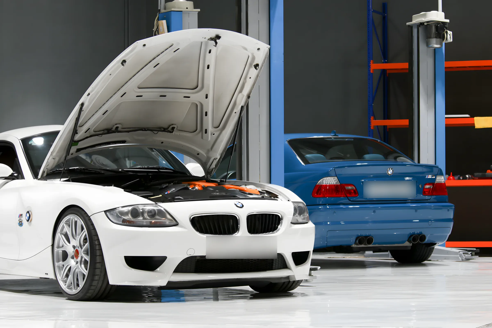
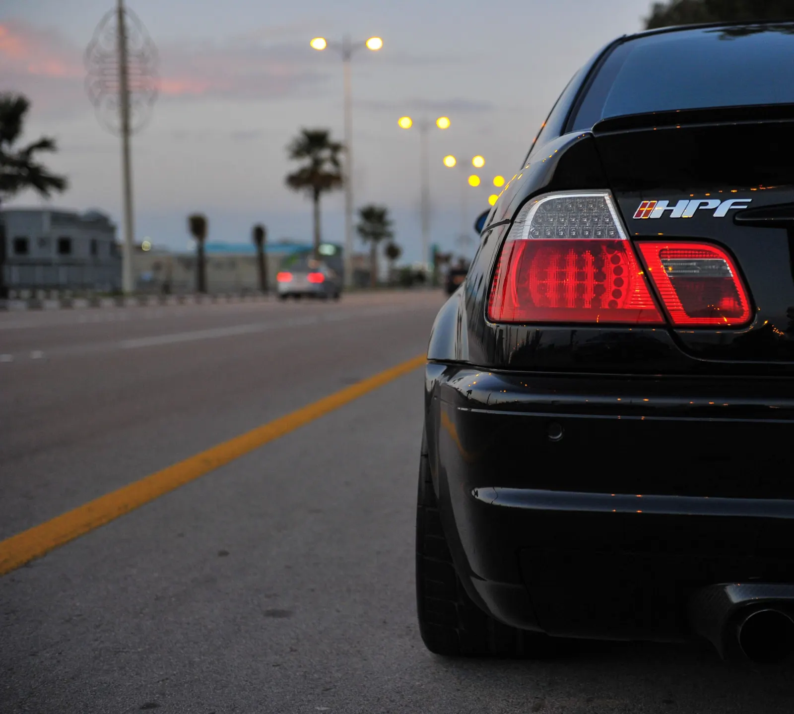

صيانة وفحص وتعديل سيارات BMW وميني والدراجات النارية في الدمام.
بدأنا على سياراتنا نحن.
في عام 1999 لم نجد ورشة BMW جيدة، وكانت صيانة الوكالة تكلفنا الكثير في كل مرة. فبدأنا العمل على سياراتنا BMW وميني في كراج المنزل.
وثق بنا الأصدقاء وغيرهم لنظافة العمل وسرعة الوصول إلى السبب الحقيقي للعطل دون تغيير قطع لا داعي لها، وهكذا بنينا سمعتنا. واليوم SHAFT مركز خدمة لهندسة السيارات في الدمام، يعمل بمعايير الصيانة الأصلية وبأدوات معتمدة من الشركات المصنعة. اقرأ قصتنا

- 1999صيانة BMW وميني في كراج المنزل، لسياراتنا ثم لسيارات أصدقائنا.
- 2006تعديل السيارات والدراجات النارية، من سباقات الأوتوكروس الوطنية إلى معارض السيارات.
- +19سنة من الخبرة قبل افتتاح مركز الخدمة في الدمام.
أي خدمة تحتاج؟
سواء كانت صيانة روتينية أو حلاً لمشكلة معينة، سنعتني بك وبسيارتك. نستخدم أجهزة فحص أصلية وأفضل القطع والزيوت، لجميع أنواع السيارات.
- 01صيانة دوريةصيانة مميزة وسريعة: تغيير زيت المحرك مع الفلتر وباقي القطع المستحقة.
- 02
 صيانة نظام التكييففحص وتعبئة نظام التكييف بجهاز آلي وفق معايير الشركة المصنعة.
صيانة نظام التكييففحص وتعبئة نظام التكييف بجهاز آلي وفق معايير الشركة المصنعة. - 03كشف وفحص شاملفحص احترافي لجميع الأنظمة ووحدات التحكم الإلكترونية والكهربائية بأجهزة أصلية.
- 04
 فحص الزيت والفراملباقة The Works: تغيير الزيت، تدوير الإطارات، فحص الفرامل والبطارية، وفحص متعدد النقاط.
فحص الزيت والفراملباقة The Works: تغيير الزيت، تدوير الإطارات، فحص الفرامل والبطارية، وفحص متعدد النقاط. - 05
 الدراجات الناريةصيانة وتعديل الدراجات النارية، في قسم خاص بجانب السيارات.
الدراجات الناريةصيانة وتعديل الدراجات النارية، في قسم خاص بجانب السيارات. - 06الأداء والتعديلتعديل منذ 2006، بقطع G-POWER وTurner Motorsport.
داخل الورشة
ميكانيكيون ومهندسون شغوفون بعملهم، بمعايير صيانة أصلية وأدوات معتمدة. النزاهة والجودة قيمنا، وبتكلفة معقولة.

الأداء
التعديل جزء من SHAFT منذ 2006، للسيارات والدراجات النارية. العلامات التي نعمل معها:
- G-POWERمنتجات عالية الأداء لسيارات BMW ومرسيدس-بنز.
- Turner Motorsportقطع BMW عالية الأداء وقطع غيار BMW أصلية.
احجز موعد صيانة أو فحص.
أرسل لنا نوع السيارة وسنة الصنع وما تحتاجه. صورة لضوء التحذير تساعدنا.
أو راسلنا على info@shaftauto.com
موقعنا
مفتوح الآنالمنطقة الصناعية الأولى، 9006
الدمام 32234، المملكة العربية السعودية
| السبت | 8:30 ص – 12 م · 2 – 6 م |
|---|---|
| الأحد | 8:30 ص – 12 م · 2 – 6 م |
| الإثنين | 8:30 ص – 12 م · 2 – 6 م |
| الثلاثاء | 8:30 ص – 12 م · 2 – 6 م |
| الأربعاء | 8:30 ص – 12 م · 2 – 6 م |
| الخميس | مغلق |
| الجمعة | مغلق |